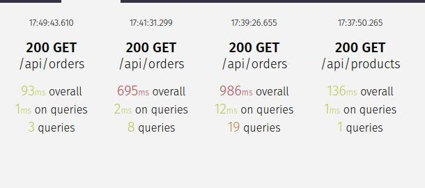

Supercharge Your Django Queries with Django Silk
Recently, while working on my APIs, I noticed an interesting issue - the response times were longer than expected 🤔.
As performance is key to delivering a smooth user experience, I decided to investigate further. That’s when I came across Django Silk, a powerful profiling tool for Django applications.
Now you may ask, what are the benefits of Django Silk?
Identify Query Bottlenecks Django Silk allows you to inspect all queries executed during each request, analyze their execution times, and pinpoint the bottlenecks causing delays.
Fix N+1 Query Problems It highlights redundant queries in your code. By leveraging select_related() and prefetch_related(), I significantly reduced the number of database hits.
Monitor Improvements After optimization, Django Silk helped verify the improvements. The response times were much faster, and the APIs felt noticeably snappier!
In the below image, you can see how code optimization drastically reduces the response time - from 12ms to just 1ms 🚀 for /api/orders endpoint.

💡 Key Takeaway: Profiling tools like Django Silk make it easy to detect and fix inefficient queries, making your applications more efficient and scalable.